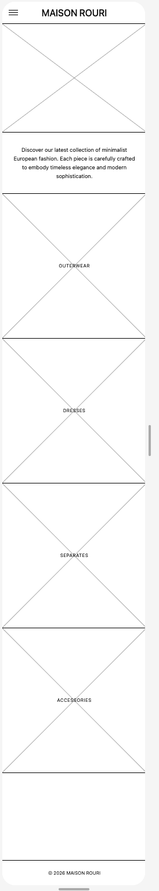
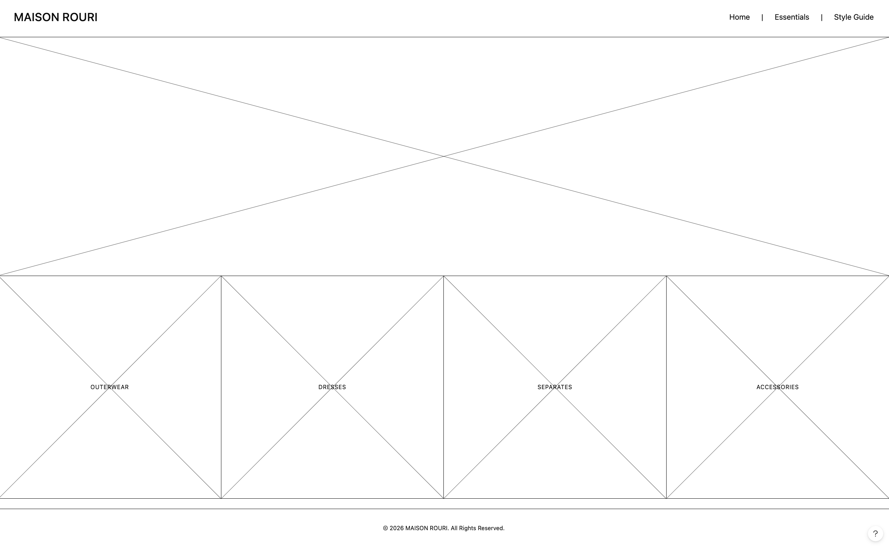

Site Name & Branding
Site Name: Maison Rouri
Reasoning: "Maison" gives an immediate nod to classic French fashion houses, while "Rouri" adds a unique, personal signature. The name sets a tone of timeless, European-inspired elegance, perfectly capturing the site's focus on chic, understated style inspired by icons like Princess Diana.
Site Purpose
The site serves as a styling guide for building a European-inspired capsule wardrobe. It will feature curated galleries of essential pieces—from structured blazers for wandering Paris to flattering swimwear and sarongs for Mediterranean getaways. The site aims to help users capture that effortless, royal elegance with fewer, high-quality items.
Target Audience Scenarios
These are the core questions from our target audience that the website will answer:
- "How can I build a versatile, travel-friendly capsule wardrobe for a week-long trip to Europe this May without overpacking?"
- "What are the key elements of Princess Diana's casual street style that I can incorporate into my everyday wardrobe?"
- "How do I choose the most flattering swimwear and cover-ups that match a chic, European aesthetic?"
Color Schema
The color palette is inspired by classic European tailoring and royal fashion.
- Royal Navy Blue (#1B263B): Used for primary text, headings, and the header background. It is a staple of Parisian chic and reminiscent of Princess Diana's iconic sapphire blue.
- Ivory (#FAF9F6): Used as the primary background color. It provides a softer, more luxurious canvas than stark white.
- Metallic Gold (#D4AF37): Used for accents, borders, and interactive elements. It adds a touch of high-end, European boutique elegance.
Typography
The typography pairs a high-fashion serif with a modern, clean sans-serif.
- Headings: Playfair Display. Used for the site title and all major headings. Its elegant, high-contrast strokes resemble the typography found in European fashion magazines like Vogue.
- Body Text: Montserrat. Used for paragraphs and lists. It is a geometric sans-serif that provides a very clean, readable, and modern contrast to the decorative headings.
Wireframes
Below are the layout representations for the Home Page in both Mobile and Desktop views.
Mobile View

Desktop View
